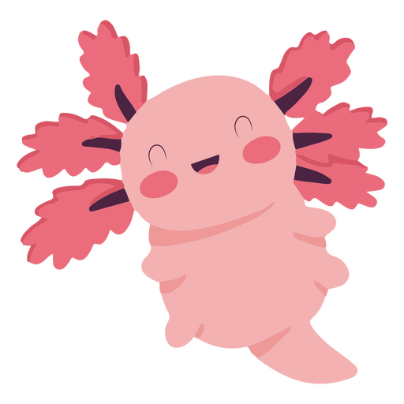

Axolotilandia

Cosas que comen los ajolotes
- Microalgas
- Alga epirulina
- Nauplios de artemia
- Lombris de tierra
Enfermedades usuales de los ajolotes
- Origen paraistario
- Origen bacteriano
- Origen viral
MITOLOGIA
Hace mucho tiempo, los dioses decidieron reunirse en Teotihuacan para crear el universo ofreciendo su propia vida en sacrificio. Deidades como Huitzilopochtli, Xochipilli y Tezcatlipoca, entre otros, se arrojaron al fuego, sin embargo, uno de ellos no quería hacerlo, pues tenía miedo. Este era Xólotl, el dios perro y gemelo de Quetzalcóatl. Xólotl no quería arder, aunque su inmolación era importante para dar movimiento a los astros y, así, concluir la invención del universo. Entonces tomó valor y huyó velozmente de Teotihuacan hacia rumbo desconocido. Los dioses estaban enojados ante tal acción, por lo que le ordenaron al Viento encontrarlo para que cumpliera el sacrificio. La tarea no era tan fácil, pues Xólotl empezó a transformarse en diversas especies para que no lo hallaran. La primera forma que adoptó fue la de un guajolote, pero al verse amenazado por la cercanía del viento, se convirtió en maguey. Luego tomó la figura de un perro xoloitzcuintle, pero de nuevo fue rastreado, por lo que alteró su cuerpo para lucir como una planta de maíz. A pesar de todas las transformaciones, Xólotl era localizado por el enviado de los dioses. Al no tener escapatoria, decidió arrojarse al lago convirtiéndose en un axolote.
ANATOMIA
El axolote de Xochimilco (Ambystoma mexicanum) es un anfibio del orden Urodelo, que pertenece a la familia Ambystomatidae, misma que agrupa a las salamandras. Los axolotes presentan esqueleto que al no estar completamente osificado difiere de la mayoría de los vertebrados. Este proceso es evidente en la zona de las branquias que están compuestas en su totalidad por cartílago. El cráneo de los anfibios en general, presenta mayor número de estructuras cartilaginosas que óseas, y presenta conductos que comunican la cavidad nasal con la bucal, llamados coanas u orificio nasal interno. En la columna vertebral el número de vertebras presentes es de 50 aunque pueden variar Si consideramos que el número de vertebras de la región de la cola puede ir desde 30 hasta 35. La columna se puede diferenciar en cuatro partes: cervical, torácica, sacra y caudal. Otro aspecto interesante es que poseen costillas rudimentarias que se observan a lo largo de todo el cuerpo. Los axolotes poseen cuatro extremidades que se desarrollan a partir de la tercera semana de edad. Las dos extremidades anteriores poseen cuatro dedos mientras que las dos posteriores poseen cinco. Todos los anfibios adultos son carnívoros estrictos y poseen un tracto gastrointestinal relativamente corto y simple. El alimento es ingerido a través de la boca, de hecho, la boca es la responsable del nombre científico de Ambystoma ya que significa Amblyx =copa, taza y stoma = boca. Los ajolotes no mastican el alimento, sin embargo, poseen unas estructuras aserradas cartilaginosas en el paladar inferior y superior que fungen como dientes que ayudan a la sujeción de las presas.
CONSERVACION
Actualmente las acciones para la conservación de esta especie se están centrando en mejorar las condiciones del Lago de Xochimilco a través de la educación para la conservación, ecoturismo, restauración del hábitat, control de especies introducidas de peces (como carpas y tilapias) y estrategias alternas para la conservación de axolotes in situ como la generación de refugios. Los proyectos que actualmente se desarrollan integran los cuatro grandes sectores para la conservación: político, social, económico y científico. La reintroducción de axolotes que han sido criados en cautiverio no se recomienda hasta que las amenazas (como crecimiento urbano, ganadería, uso de agroquímicos, fragmentación del hábitat, control de especies introducidas, posibles enfermedades, riesgos genéticos, entre otras) puedan ser mitigadas o evaluadas dependiendo del caso. Es claro que la liberación de axolotes en los canales de Xochimilco u otros cuerpos de agua no es una opción sana para el animal ni para el ecosistema. En tal caso, si la intención en algún momento es deshacerse del organismo, lo adecuado sería regalarlo. Es importante recordar que el promedio de vida de un axolote en cautiverio es de 8 a 10 años.
lee mas aqui >formulario de identificacion de los axolotes
¿Que edad tiene tu ajolote?